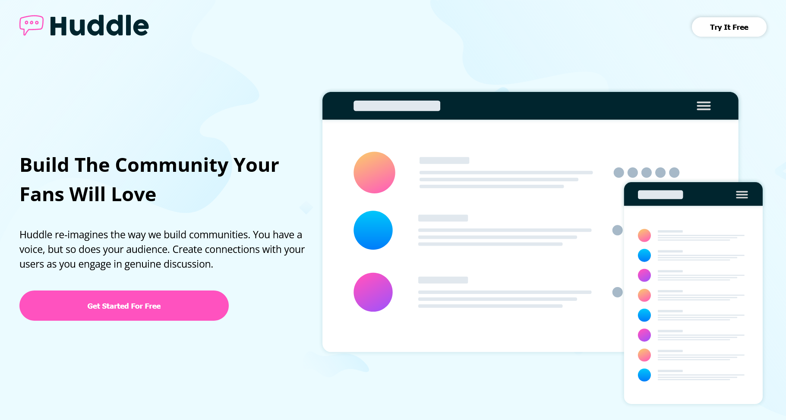
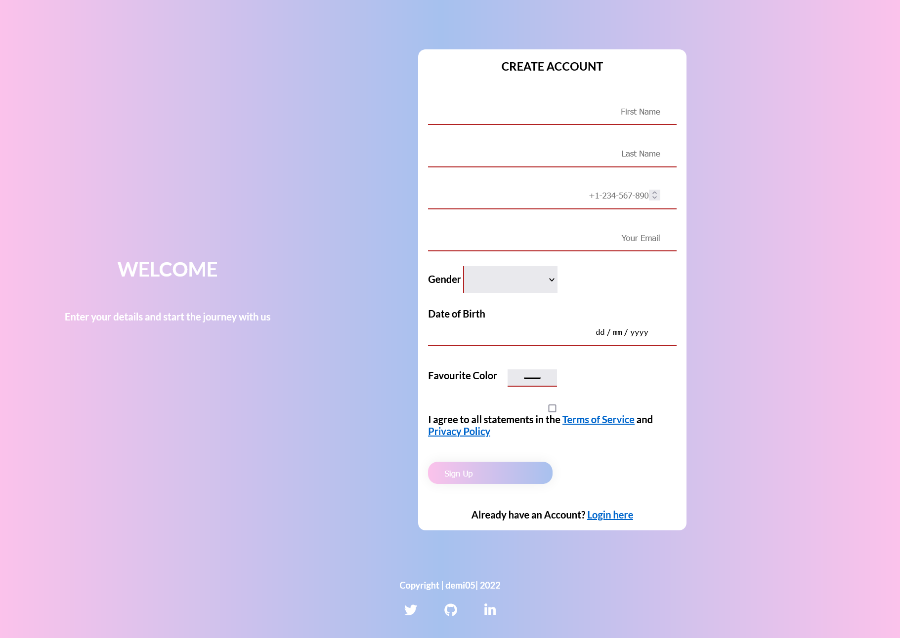
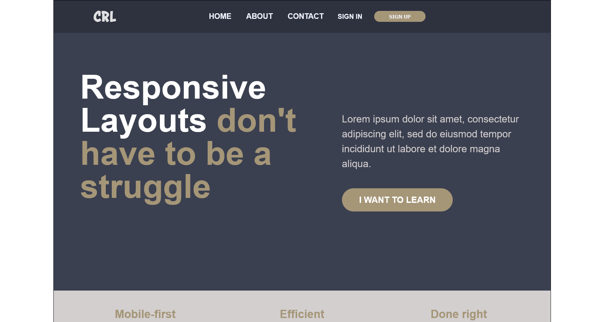
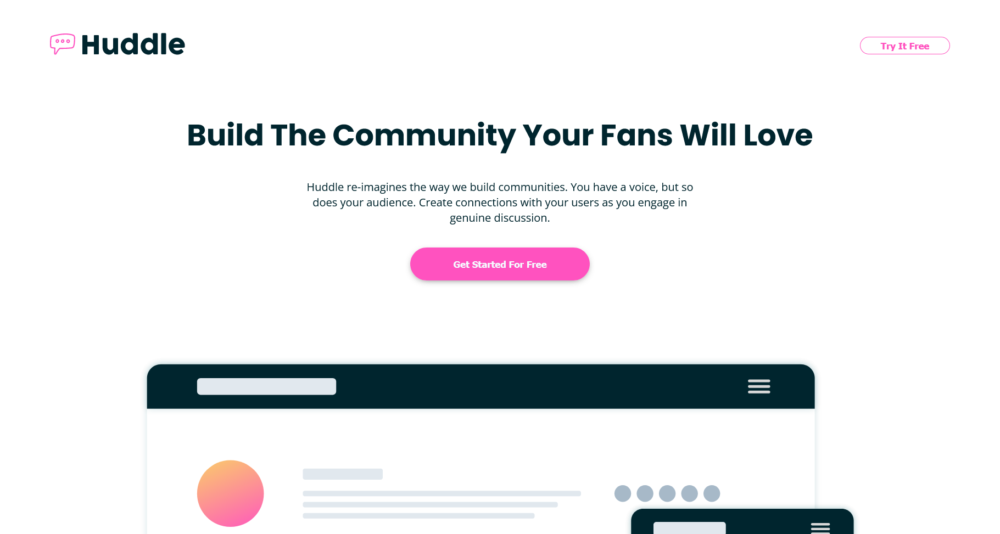
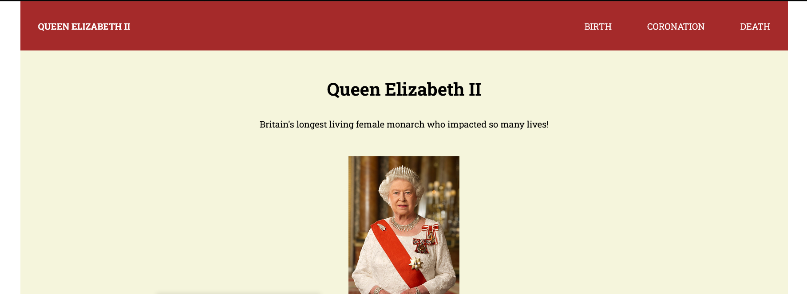
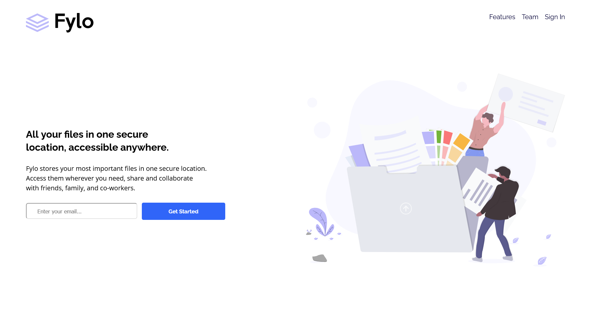

My Projects

Huddle Landing Page from Frontend Mentor.

Registration Page task from the I4GXZuri Cohort 2.

Final challenge for Kevin Powell's Conquering Responsive Design Course.

Huddle landing page with curved sections from Frontend Mentor.

Tribute Page task from the I4GXZuri Cohort 2.

Fylo landing page from Frontend Mentor.